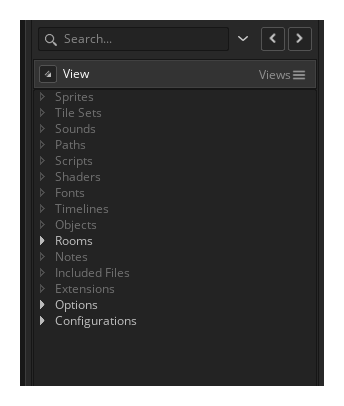
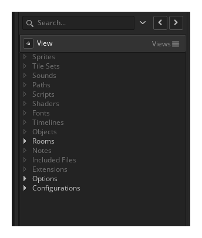
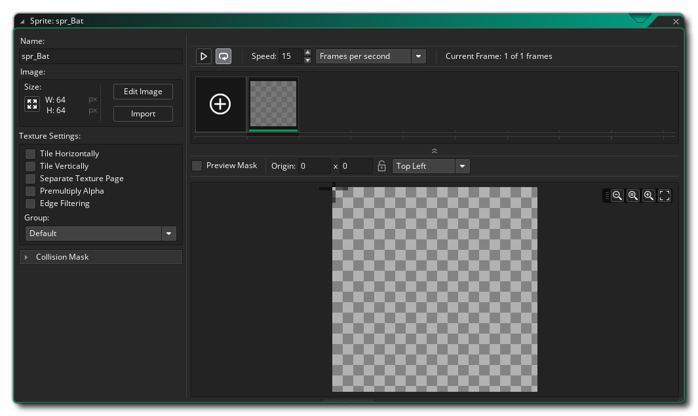
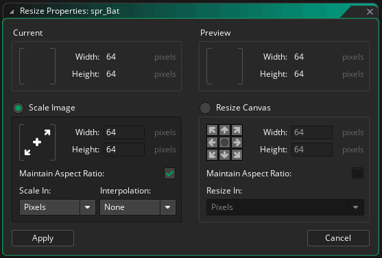
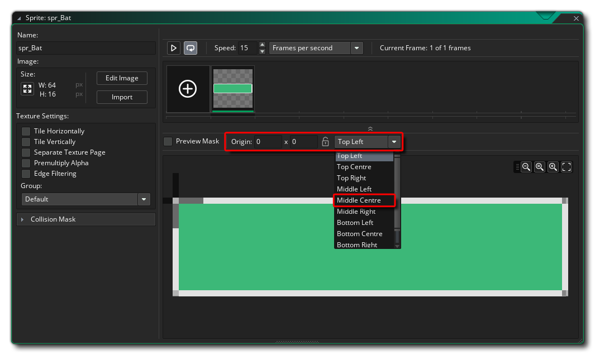

When using GameMaker Studio 2, all your visuals start off as sprites. These are simply images made up of pixels that we will draw to the screen to represent what is happening, and in the case of a "BreakThrough" game, we will need the following:
- A bat - This will be what the player moves to direct the ball
- A ball - This will bounce around the screen and destroy bricks
- Bricks - These are what you must destroy to complete the game
- Borders - What the ball will bounce off so it doesn't go out the screen
To create a sprite, go to the Resource Tree, then use the Right Mouse Button  on the Sprite resource and select Create Sprite, then name the sprite "spr_Bat":

on the Sprite resource and select Create Sprite, then name the sprite "spr_Bat":

This will open the Sprite Editor window where we show the properties for the sprite: 
The first thing we need to do is make a the sprite the correct size, as we don't want a square bat! For that click the Resize Sprite button and change the size of the sprite to 64 pixels wide by 16 pixels tall: 
Back in the Sprite Editor again, click on the Edit Image button to open up the Image Editor. The Image Editor is used in GameMaker Studio 2 to draw and edit all the graphical assets that make up your game. In this case we want to draw a "bat" for the game, so, use the different tools in the toolbox to do this now, specifically:
- The Fill tool : Fill the canvas with a colour
- The Rectangle tool : Draw an outline around the canvas
- The Eraser tool : Remove the corners to give the bat a "rounded" look

You can take a moment if you wish to play around with the other draw tools (you can find full descriptions for each of them in the manual) to see what they can do or make the bat image prettier, then when you are finished simply close the image editor and the image will be saved and assigned to the bat sprite.
We need to set the sprite origin now. This is the point where the sprite will be positioned within the room (think of it like pinning an image to a board... the origin is where you stick the pin) and we need to set it to the Middle Center position: 
With that done, let's make the rest of the basic sprites for the game, starting with the bricks:
- Create a new sprite and call it "spr_Brick"
- Click the "Resize" button and set the size to 32 width and 16 height
- Click the "Edit Image" button and in the image editor fill the rectangle with white and give it a black border (we are going to colour the bricks programmatically so they need to be black and white)
- Close the Image Editor and the Sprite Editor, without changing the origin of the sprite as it's fine set to the top left
The next sprite to make is for the ball, so go ahead and do the following:
- Create a new sprite and call it "spr_Ball"
- Click the "Resize" button and set the size to 15 width and 15 height
- Click the "Edit Image" button and in the image editor draw a filled circle of any colour. You can do this freehand or use the Ellipse tool
- Close the Image Editor, and in the Sprite Editor set the origin to the Middle Center (like we did for the bat sprite)
Okay, that's all the sprites for now. Let's move on to creating some objects to use them!